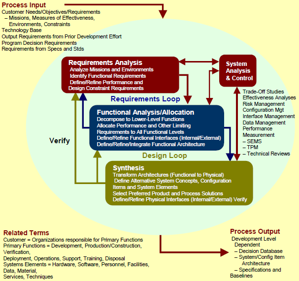

Engineering 工程 <<
Previous Next >> 解救菜英文
Terminology 術語
Entrepreneurship 創業精神
Requirements Development (Requirements DevelopmentRequirements Development Steps.pdf)
需求開發(Requirements DevelopmentRequires Development Steps.pdf)

(System Engineering Process Overiew) (系統工程概論)
Recognize needs 認識需求
Recognizing the Need for Information (source)
認識到對信息的需求（來源）
Education requires the ability to adapt, problem solve, and think critically about challenges that arise in your classes and career.
教育需要具有適應能力，解決問題的能力，並能認真思考在課程和職業中出現的挑戰。
An educated person can recognize an opportunity to learn and make the most of it.
受過良好教育的人可以認識到學習和充分利用的機會。
An important skill to acquire is the ability to acknowledge when you don’t know something and decide what to do about it.
要獲得的一項重要技能是能夠在不了解某項內容時進行確認並決定如何處理。
In other words, it’s valuable to approach an assignment by asking,
換句話說，通過詢問
“What do I already know about this?”
“What do I want to know?”
“How do I find the information I need?”
“我已經知道了什麼？”來完成任務很有價值。
“我想知道什麼？”
“我如何找到所需的信息？”
Beyond that, you’ll be able to ask,
除此之外，您還可以問：
“Where will I find the best information to fit my needs?”
“How will I know it when I see it?”
“What do I do with it once I have it?”
“我在哪裡可以找到最適合我需要的信息？”
“看到後我怎麼知道？”
“一旦擁有它我該怎麼辦？”
All of these questions together are a part of a concept called “Information Literacy,” which you’ll learn about, practice, and apply as you work through these six modules.
所有這些問題都是“信息素養”概念的一部分，當您通過這六個模塊學習時，您將學習，實踐和應用這些知識。
In this first module, you’ll learn how to recognize the need for information and how to plan for a successful inquiry.
在第一個模塊中，您將學習如何識別信息需求以及如何計劃成功的詢問。
Understanding these concepts will prepare you to approach later modules – about finding and using information – with a clear sense of purpose.
理解這些概念將使您以明確的目的來準備以後的模塊（有關查找和使用信息）。
Define requirements 定義要求
Conceptual Design 概念設計
Generate innovative concepts 產生創新概念
Brainstorming 集思廣益
The 5W+H methods (What, Why, When, Who, Where + How)
5W + H方法（什麼，為什麼，何時，誰，在哪里以及如何做）
Reverse thinking 逆向思維
Using analogies 使用類比
Social Listening 社會傾聽
Role playing 角色扮演
Mind mapping 思維導圖
Concept generating 概念產生
TRIZ (Teoriya Resheniya Izobretatelskikh Zadatch, Theory of Inventive Problem Solving)
TRIZ（Teoriya Resheniya Izobretatelskikh Zadatch，創造性解決問題的理論）
Select best concepts 選擇最佳概念
Detailed Design 詳細設計
Prduct layout: A product layout is where the equipment, tools, and machines are located according to how a product is made.
產品佈局：產品佈局是根據產品的製造方式放置設備，工具和機器的位置。
Material selection 材料選擇
System simulation 系統仿真
Prototype and tesing 原型和測試
Design documentation 設計文件
Production 生產
Type of Manufacturing 製造類型
Production volume 生產量
Supplier selection 供應商選擇
Intro_to_engineering.pdf
Kinematics_ kinetics_dynamics_inertia.pdf
Intro_to_mechanics.pdf
engineering_mechanics.pdf
Intro_to_kinematics_and_dynamics.pdf
Engineering (工程)
involves the design and analysis of machines
涉及機器的設計和分析
Engineering (工程): 牽涉機器的設計與分析
Machine (機器)
deal with the conversion of energy from one source to another using the basic principles of science
使用科學的基本原理處理能量從一種來源到另一種來源的轉化
Machine (機器): 牽涉運用科學基本原理將能量從源頭轉化為另一種(作用)
Mechanics (力學)
a branch of physical science that deals with energy and forces and their effect on bodies (Merriam-Webster Dictionary)
物理學的一個分支，涉及能量和力及其對人體的影響（Merriam-Webster詞典）
Mechanics(力學): 物理學的一個分支, 牽涉(研究)能量及作用力對物體所造成的影響
contains three major subbranches: kinematics, statics, and kinetics
包含三個主要子分支：運動學，靜力學和動力學
Mechanics(力學): 包括三個主要分支- 運動學, 靜力學與動理學
Kinematics (運動學)
deals with the study of relative motion
處理相對運動的研究
Kinematics(運動學): 涉及相對運動的研究
a branch of dynamics that deals with aspects of motion apart from considerations of mass and force (Merriam-Webster Dictionary)
動力學的分支，除了質量和力的考慮之外，還處理運動的各個方面（Merriam-Webster詞典）
Kinematics (運動學): 動力學的一個分支, 涉及運動有關的探討, 但並不涉及質量與力
Statics (靜力學)
Statics(靜力學): study of forces and moments apart from motion 研究運動以外的力和力矩
Statics (靜力學): 研究力, 力矩與運動(之間的關係)
Kinetics (動理學)
Kinetics (動理學): deals with the result of forces and moments on bodies 研究運動以外的力和力矩
Kinetics (動理學): 研究力與力矩對物體造成的結果
a branch of science that deals with the effects of forces upon the motions of material bodies or with changes in a physical or chemical system (Merriam-Webster Dictionary)
科學的一個分支，涉及力對物質運動或物理或化學系統變化的影響（Merriam-Webster詞典）
Kinetics(動理學): 科學的一個分支, 涉及力對物質運動以及物理或化學系統變化所造成的影響
Dynamics (動力學) = Kinematics (運動學) + Kinetics (動理學)
Dynamics(動力學): deals with the study of motion caused by forces and torque 研究由力和扭矩引起的運動
Dynamics(動力學): 研究力與扭矩所造成的運動
a branch of mechanics that deals with forces and their relation primarily to the motion but sometimes also to the equilibrium of bodies (Merriam-Webster Dictionary)
力學的一個分支， 主要處理力及其與運動的關係，有時還涉及物體的平衡 （Merriam-Webster詞典）
Dynamics(動力學): 力學的一個分支, 主要處理力及其與運動的關係, 有時並涉及物體的平衡
Mechanism design (機構設計)
the desired motion is known and the task is to determine the type of mechanism along with the required forces and torques to produce the desired motion
已知所需的運動, (設計)任務是確定機構的類型以及所需的力和扭矩得以產生所需的運動
Engineering 工程 <<
Previous Next >> 解救菜英文